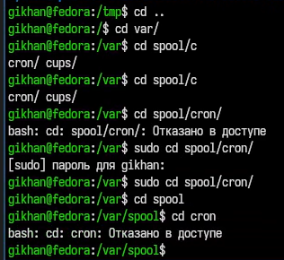
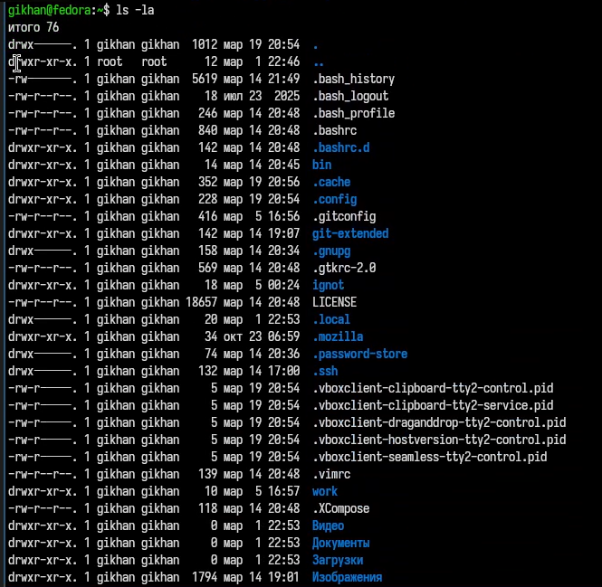
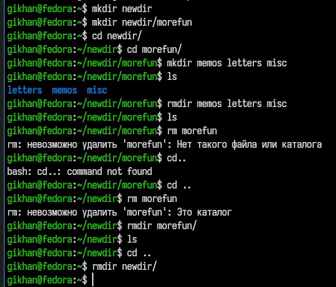
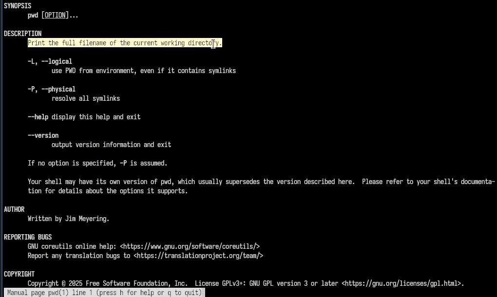
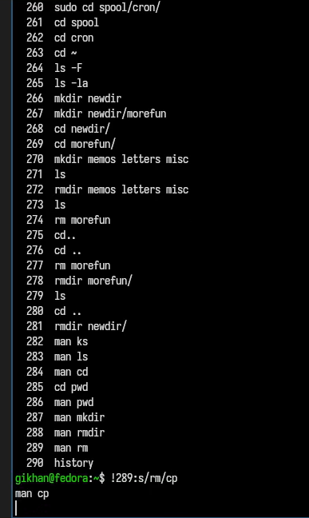
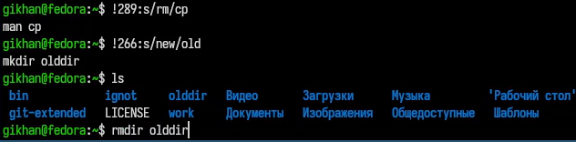

Операционные системы
Приобретение практических навыков взаимодействия пользователя с системой посредством командной строки.
Последовательность выполнения работы 1. Определите полное имя вашего домашнего каталога. Далее относительно этого каталога будут выполняться последующие упражнения. 2. Выполните следующие действия: 2.1. Перейдите в каталог /tmp. 2.2. Выведите на экран содержимое каталога /tmp. Для этого используйте команду ls с различными опциями. Поясните разницу в выводимой на экран информации. 2.3. Определите, есть ли в каталоге /var/spool подкаталог с именем cron? 2.4. Перейдите в Ваш домашний каталог и выведите на экран его содержимое. Определите, кто является владельцем файлов и подкаталогов? 3. Выполните следующие действия: 3.1. В домашнем каталоге создайте новый каталог с именем newdir. 3.2. В каталоге ~/newdir создайте новый каталог с именем morefun. 3.3. В домашнем каталоге создайте одной командой три новых каталога с именами letters, memos, misk. Затем удалите эти каталоги одной командой. 3.4. Попробуйте удалить ранее созданный каталог ~/newdir командой rm. Проверьте, был ли каталог удалён. 3.5. Удалите каталог ~/newdir/morefun из домашнего каталога. Проверьте, был ли каталог удалён. 4. С помощью команды man определите, какую опцию команды ls нужно использовать для просмотра содержимое не только указанного каталога, но и подкаталогов, входящих в него. 5. С помощью команды man определите набор опций команды ls, позволяющий отсортировать по времени последнего изменения выводимый список содержимого каталога с развёрнутым описанием файлов. 6. Используйте команду man для просмотра описания следующих команд: cd, pwd, mkdir, rmdir, rm. Поясните основные опции этих команд. 7. Используя информацию, полученную при помощи команды history, выполните модификацию и исполнение нескольких команд из буфера команд.
i ain’t writing down allat😭🙏
Проверка наличия /cron в /spool (рис. 1)

Примеры применения ls (рис. 2)

Операции над директориями (рис. 3)

Использование мануала по командам (рис. 4)

Просмотр истории команд (рис. 5)

Использование истории для копирования и модификации ранее использованных команд (рис. 6)

не